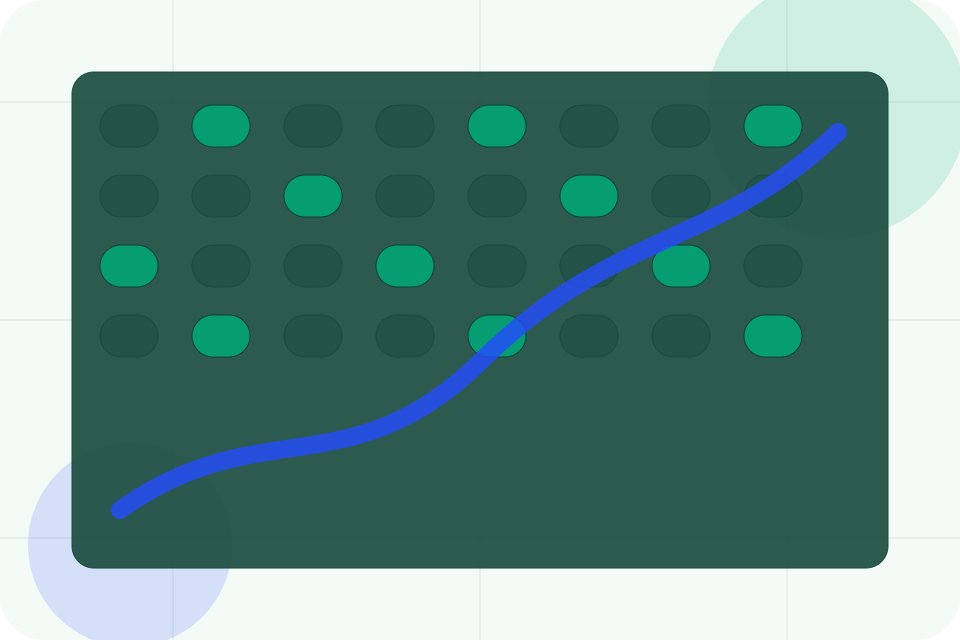
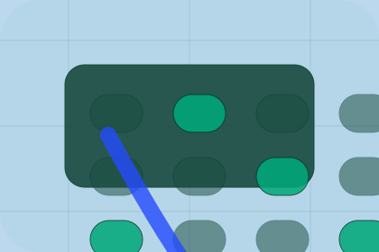

Context
Baseline gives the page a specific angle instead of repeating the navigation label.
Strategy / 01
Strategy opens as a clear environmental decision hub: what Terra offers, who it helps, why it matters, and which route to take first.
The first screen combines positioning, proof, primary action, and fast internal navigation, so people can act immediately or compare the rest of the strategy route with context.
Emissions dashboard hero
Select the closest route and Terra keeps the next step, proof, and follow-up expectation aligned with accountability and measurable change.

Strategy / 02
Baseline adds technical context to the strategy route, using the climate data operating system structure to support accountability and measurable change before visitors choose a next step.
Terra uses carbon evidence cards and focused copy to make the decision easier to scan, aligning the section with accountability and measurable change rather than filling space.
Explore StrategyBaseline gives the page a specific angle instead of repeating the navigation label.
The carbon evidence cards show what to compare, what to avoid, and what matters most for environmental, sustainability & climate services visitors.
The final cue points to a useful internal route so the section keeps the journey moving.
Strategy / 03
Roadmap explains the operating sequence so visitors can see how the first request becomes a clear recommendation and follow-up.
The steps are written from the visitor side: what they do first, what Terra clarifies, what they receive, and how support continues.
Explore StrategyHow visitors begin this route and what detail is useful at the first step.
What Terra reviews, filters, or explains before recommending the next move.
What the visitor receives afterward, including support, proof, or a handoff to the next page.
Strategy / 04
Governance adds technical context to the strategy route, using the climate data operating system structure to support accountability and measurable change before visitors choose a next step.
Terra uses carbon evidence cards and focused copy to make the decision easier to scan, aligning the section with accountability and measurable change rather than filling space.
Explore StrategyGovernance gives the page a specific angle instead of repeating the navigation label.
The carbon evidence cards show what to compare, what to avoid, and what matters most for environmental, sustainability & climate services visitors.
The final cue points to a useful internal route so the section keeps the journey moving.
Strategy / 05
Targets adds technical context to the strategy route, using the climate data operating system structure to support accountability and measurable change before visitors choose a next step.
Terra uses carbon evidence cards and focused copy to make the decision easier to scan, aligning the section with accountability and measurable change rather than filling space.
Explore StrategyTargets gives the page a specific angle instead of repeating the navigation label.
The carbon evidence cards show what to compare, what to avoid, and what matters most for environmental, sustainability & climate services visitors.
The final cue points to a useful internal route so the section keeps the journey moving.
Strategy / 06
Implementation adds technical context to the strategy route, using the climate data operating system structure to support accountability and measurable change before visitors choose a next step.
Terra uses carbon evidence cards and focused copy to make the decision easier to scan, aligning the section with accountability and measurable change rather than filling space.
Explore StrategyImplementation gives the page a specific angle instead of repeating the navigation label.
The carbon evidence cards show what to compare, what to avoid, and what matters most for environmental, sustainability & climate services visitors.
The final cue points to a useful internal route so the section keeps the journey moving.
Strategy / 07
Measurement adds technical context to the strategy route, using the climate data operating system structure to support accountability and measurable change before visitors choose a next step.
Terra uses carbon evidence cards and focused copy to make the decision easier to scan, aligning the section with accountability and measurable change rather than filling space.
Explore StrategyMeasurement gives the page a specific angle instead of repeating the navigation label.
The carbon evidence cards show what to compare, what to avoid, and what matters most for environmental, sustainability & climate services visitors.
The final cue points to a useful internal route so the section keeps the journey moving.
Strategy / 08
Reporting adds technical context to the strategy route, using the climate data operating system structure to support accountability and measurable change before visitors choose a next step.
Terra uses carbon evidence cards and focused copy to make the decision easier to scan, aligning the section with accountability and measurable change rather than filling space.
Explore StrategyReporting gives the page a specific angle instead of repeating the navigation label.

The carbon evidence cards show what to compare, what to avoid, and what matters most for environmental, sustainability & climate services visitors.
The final cue points to a useful internal route so the section keeps the journey moving.
Strategy / 09
Improvement adds technical context to the strategy route, using the climate data operating system structure to support accountability and measurable change before visitors choose a next step.
Terra uses carbon evidence cards and focused copy to make the decision easier to scan, aligning the section with accountability and measurable change rather than filling space.
Explore StrategyTerra structures improvement around context, judgment, and a clear next route so visitors can compare the block quickly before they book an audit.
Book AuditStrategy / 10
Terra closes the strategy route with a clear action, a quick reminder of the value, and a low-friction way to book an audit.
Visitors who are ready can use the primary action. Visitors who are still comparing can scan the section links, proof, and support routes before they book an audit.
Book AuditThe final block keeps the choice simple: act now, compare one more proof route, or send enough detail for a focused response.
Book Auditaccountability and measurable change
A climate-accounting site with emissions dashboards, report proof, methodology panels, and audit CTAs. Strategy ends with a direct path to book an audit, plus enough context for visitors who still need to compare.

Book AuditInformation is provided for planning and should be reviewed for the final client, location, and operating rules.